▶ 有声演示
研究 · 古文字契 · 甲骨文
1265 个已释读 + 3000 个未释读的真实字形，做成能玩的字海。
一个人 + AI，做东西越来越快。真正拉开差距的，是做完之后有没有留下来。
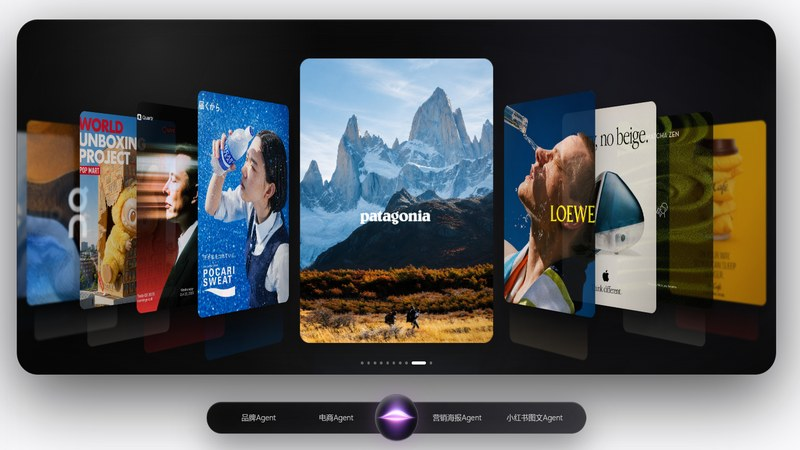
做过的网站、组件、实验、研究

hely · CardBot · Sea Space · 掌相 · 多平台发布

#001–#096，74 张定稿
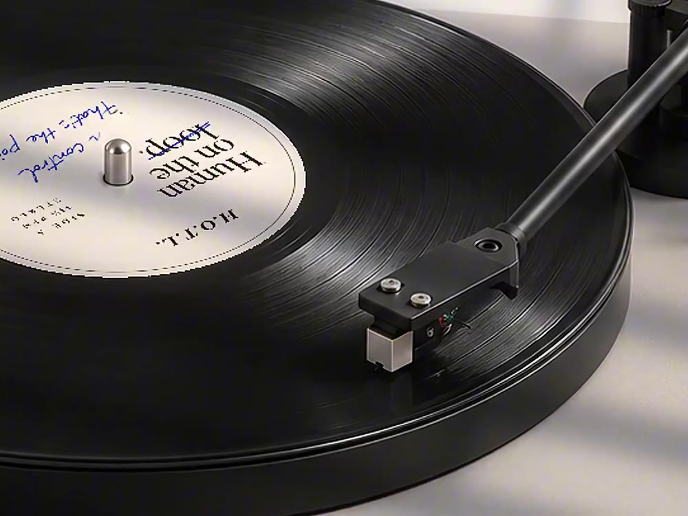
一支虚构的乐队，发真的歌
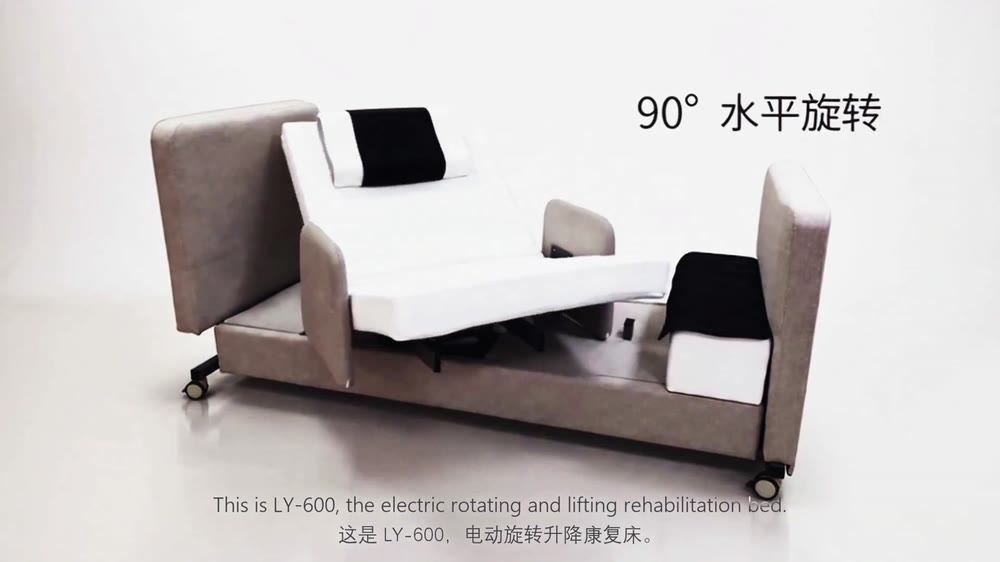
35 支：品牌片 · 动效 · AI 短片


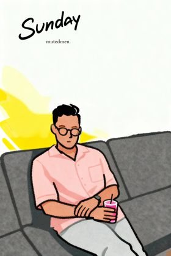


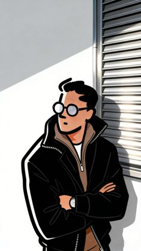
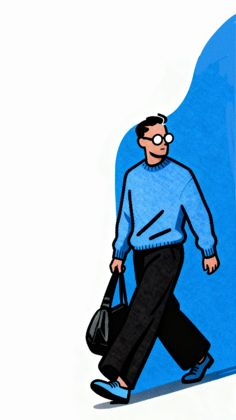


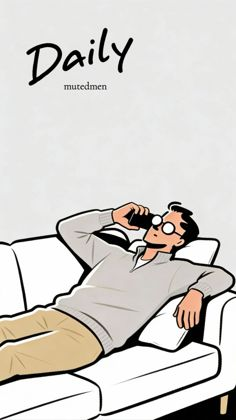


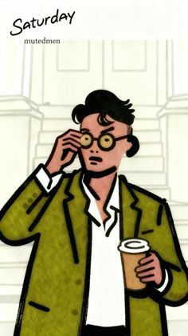
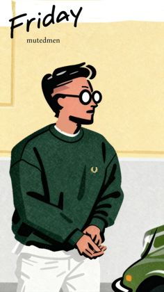


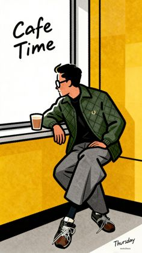

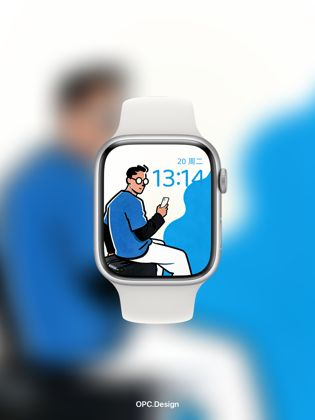
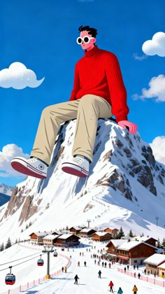


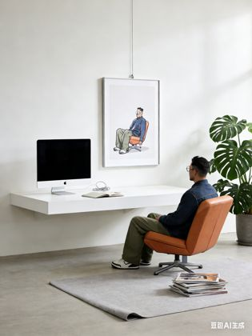
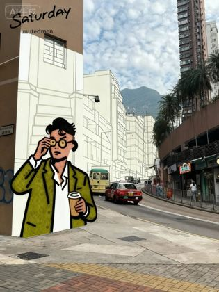

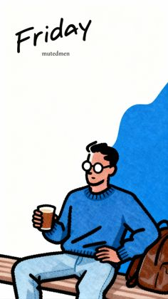

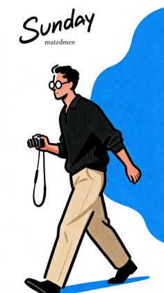


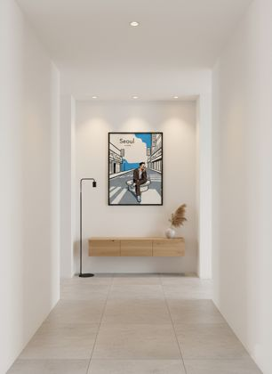
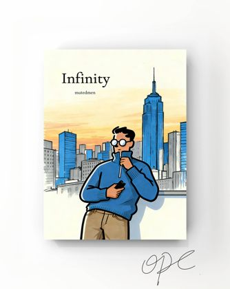
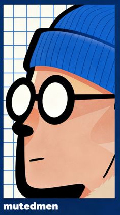
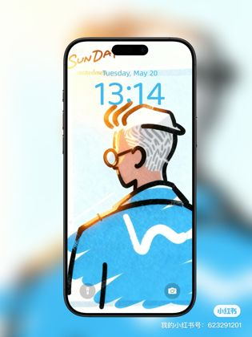
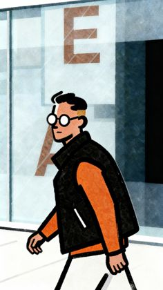
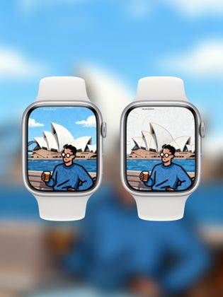

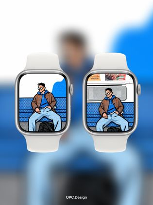

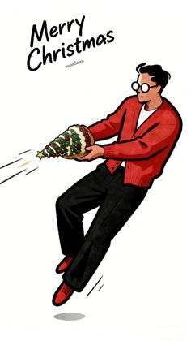


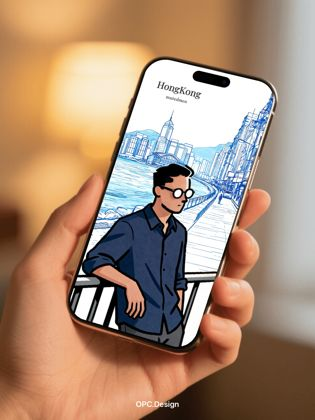
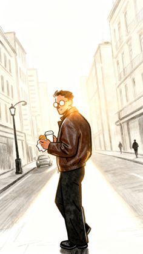

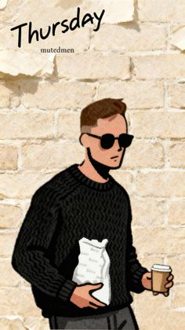
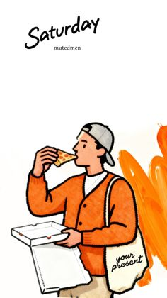


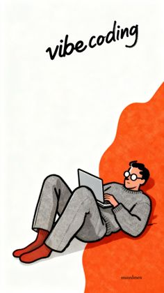
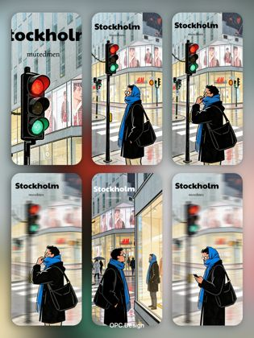
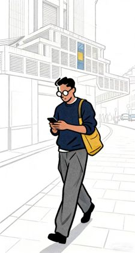


Quiet emotions in a loud world.在喧嚣的世界里，记录安静的情绪。
一本关于现代生活情绪的视觉日记。简洁的线条、克制的色彩，记下城市里那些平静、从容、孤独与温度的瞬间。
它不是一个固定的角色，
而是一种审美、一种情绪、一种看世界的方式。
留一个问题，不用现在回答：
黎健堂 · 碳基社区 · 广州德宝里科技 | hely.fun · cellmotion.cn
 扫码加微信 · allen_8838
扫码加微信 · allen_8838